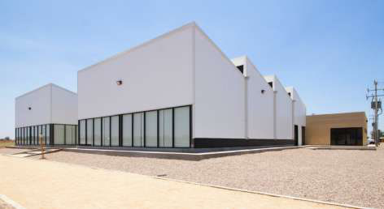
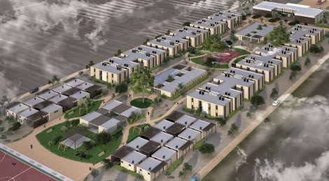
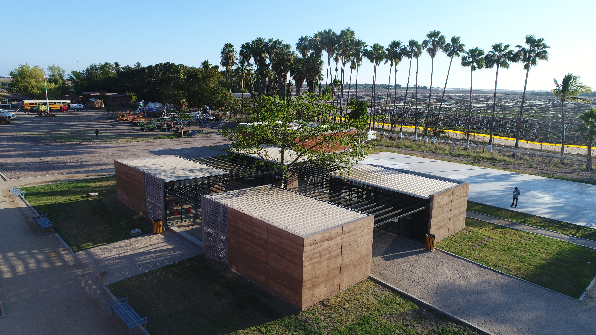
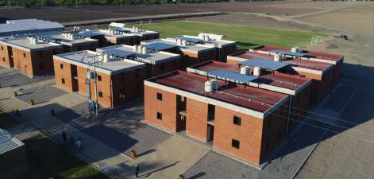
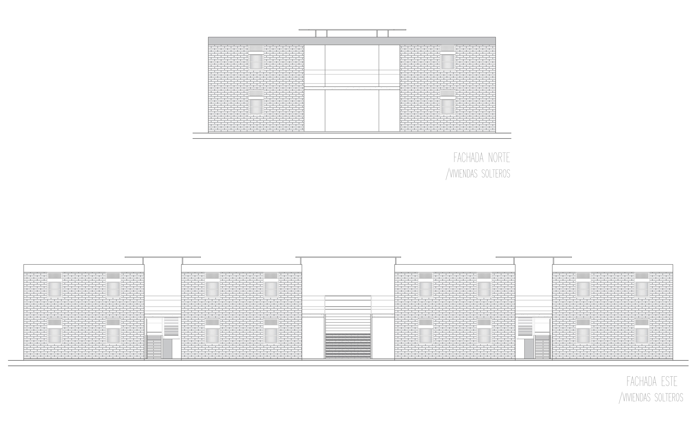
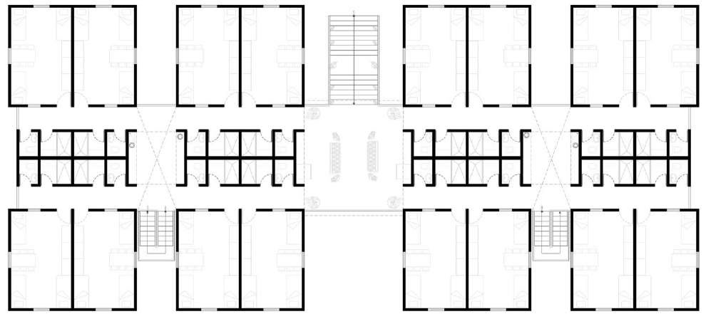

Agricultural complex in Mexico, 2016. Improving quality of life through the built environment — an example to the agricultural industry. Published in ArchDaily.

Improving the quality of life through the built environment.
Published in ArchDaily.
Viva Organica is an agricultural complex in Mexico. The project works on improving quality of life through the built environment, and sets an example to the agricultural industry by design.
The project was published in ArchDaily.




